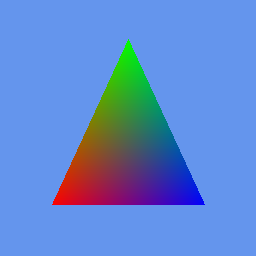
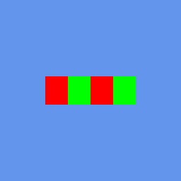
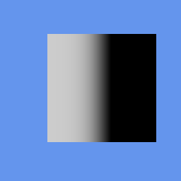

Verification & Known Issues
Every count on this page is a count of test definitions, not a pass rate. The numbers come from counting GoogleTest macros in the source tree and test registrations in the CMake files. A static count cannot tell you how many of those tests pass — that needs a run. If this page ever disagrees with what ctest prints on your machine, ctest is right.
How CNA is verified
An XNA reimplementation can pass its own test suite perfectly and still be wrong, because the tests encode the author's belief about what XNA does. CNA works around that with five layers, three of which compare against something outside the project.
| Layer | What it checks | Scale |
|---|---|---|
| Unit tests (GoogleTest) | Math, geometry, curves, packed vectors, game-loop semantics, state objects, input, audio, networking, content readers. Runs headless. | 433 test source files defining 6,818 GoogleTest cases — 5,218 TEST, 1,593 TEST_F and 7 TEST_P |
GPU pixel-readback tests (ctest) |
Renders a scene on a real device context, reads the framebuffer back to the CPU, and asserts on actual pixel values. This is what catches "the shader compiles but draws the wrong thing." | 1,621 CMake-registered renderer pixel, smoke and integration entries across the whole tree — but at most 293 in any single build, because a build compiles one renderer family |
| XNA 4.0 oracle corpus | Scenes rendered by real XNA 4.0 and diffed against CNA's DIRECTX9 output at tolerance 0. Ground truth is the actual Microsoft runtime, not anybody's reading of it. |
39 scenes under tools/xna-oracle/, with reference PNGs captured from real XNA |
| Differential testing against FNA | A harness links a real, running FNA build and dumps reference values to JSON; a matching C++ tool dumps CNA's; a script diffs them key by key. Ground truth comes from executing FNA, not from reading its source. | tools/fna-reference/, tools/cna-reference/, scripts/compare-fna-reference.py |
| API purity, checked by the compiler | Every declaration that is not part of XNA 4.0 is tagged CNAEXT. The CNA_STRICT_XNA_API purity mode turns any use of a CNA extension into a compile error, and compile-time signature-freeze tests pin the public API so a signature cannot drift silently. |
CNA_STRICT_XNA_API, tools/devices/StrictXnaApiSurfaceCheck.cpp, StrictXnaApiSurfaceLeakCheck.cpp |
What the test counts actually count
Two numbers get quoted about CNA's test suite, and they measure different things. Keeping them apart matters more than the size of either.
| Number | What it counts |
|---|---|
| 6,818 | GoogleTest case definitions in the source tree, spread over 433 test source files: 5,218 TEST, 1,593 TEST_F and 7 TEST_P. This is a count of the macros as written, not of a run. Which of them a given build actually compiles depends on the modules and renderer you configured. |
| 1,621 | Renderer pixel, smoke and integration tests registered with CTest across all 42 renderer implementation families. No build sees more than 293 of them, because renderer selection is a compile-time decision and one family compiles per build. |
Neither number is a claim that the tests pass. They are static counts, reproducible with grep and a look at the CMake files — see Reproducing these numbers yourself. Deliberately absent from this page: per-renderer test counts, per-renderer line counts and per-renderer maturity scores. CNA keeps no machine-readable maturity registry, so any such table would be somebody's impression dressed up as data.
Renderer coverage, one build at a time
CNA exposes 46 renderer identities across 42 implementation families, selected at configure time with -DCNA_GRAPHICS_RENDERER=<NAME> (or the equivalent -DCNA_RENDERER_<NAME>=ON). There is exactly one renderer per build and no runtime switching. That single design decision shapes everything about verification here:
- Exercising the whole tree means one configure + build + test cycle per renderer family — on the order of 42 of them. Nobody does that on every change.
- A green local run tells you about the renderer you configured. It says nothing about the other 45 identities.
- 46 identities are not 46 equally complete renderers. Some are 2D-only by design, some produce no pixels at all (
HEADLESS,STUB), andDIRECTX1is a declared stub whose entire 3D pipeline throws.
Two caveats worth stating outright. First, the Windows-only DirectX renderers — part of a set of 14 renderers that only configure on Windows — are routinely verified from Linux through Wine + DXVK / vkd3d-proton, not on real Windows hardware. Second, SupportsCapability() is not a trustworthy oracle: the base implementation returns true for everything except MultiStreamVertexInput, and DIRECTX9, DIRECTX11, DIRECTX12 and SDL_GPU do not override it at all. Test the feature, do not ask the renderer whether it has it.
The XNA 4.0 oracle corpus
This is the strongest verification claim CNA can make, so it is worth being exact about what it is — and about which renderer it applies to.
Under tools/xna-oracle/ sit 39 scenes together with 39 reference PNGs captured from real XNA 4.0 running under Wine + DXVK. CNA renders the same scenes and the images are diffed byte for byte.
| Renderer | Scenes matched at tolerance 0 |
|---|---|
DIRECTX9 | 39 / 39 Pixel-exact |
OPENGLES1 | 11 / 39 |
| EasyGL (the shared GL-profile implementation) | 10 / 39 |
FNA3D | 10 / 39 |
"Pixel-exact" is a statement about DIRECTX9 and nothing else. DIRECTX9 is deliberately held to a byte-identical authenticity bar because it is the renderer that targets XNA's own Direct3D 9 behaviour. Every other renderer is held to a "looks right" bar, and the oracle numbers above show the distance. CNA does not claim that all renderers are pixel-perfect, and neither should anyone quoting this page.
The corpus covers 39 scenes, not the API. It is ground truth for what it covers and silent about everything else.
Eight of the thirty-nine
Every image below was produced by the real Microsoft XNA 4.0 runtime, not by CNA and not by hand. CNA's DIRECTX9 renderer draws the same eight scenes and the diff must come back empty at --tolerance 0. They are reproduced throughout the tutorials where they illustrate the technique being taught.

Vertex-coloured triangle — see Tutorial 31.

Triangle strip — see Tutorial 40.

Unlit textured quad — see Tutorial 32.

The same quad with lighting on — see Tutorial 32.

Alpha test — all eight comparisons are in Tutorial 54.

Wrap texture addressing — see Graphics State.

Fresnel-weighted reflection — see Tutorial 56.

Four-bone skinning, per-pixel lit — see Tutorial 57.
These are deliberately austere scenes. A corpus like this is useful precisely because each frame isolates one piece of behaviour, so a diff that fails points at something specific. It is not a demonstration of what CNA can render — for that, see the demos.
What CI covers (and what it doesn't)
CI has grown considerably: 8 GitHub Actions workflows, 14 jobs, spanning Linux, macOS with Metal, and real headless-Chromium browser tests. Six workflows fire automatically on push and pull request; two are manual-dispatch only. GitHub Actions is the entire CI surface — there is no scheduled or nightly run.
| Workflow | Trigger | Runner | What it runs |
|---|---|---|---|
general-tests-ci.yml |
push / PR | ubuntu-24.04 | The general test suite. |
input-ci.yml |
push / PR | ubuntu-24.04 | The input tests. |
htmldom-ci.yml |
push / PR | ubuntu-24.04 | HTML_DOM browser tests in headless Chromium — the one genuine WebAssembly job. |
metal-macos-ci.yml |
push / PR | macos-14 | The METAL renderer, built on real macOS. |
devices-tests.yml |
push / PR on master/main |
ubuntu-latest | Devices and sensors. The default branch is develop, so this is dormant on ordinary development pushes. |
32bit-arithmetic-ci.yml |
push / PR on master/main |
ubuntu-latest | 32-bit arithmetic coverage. Dormant on develop for the same reason. |
d3d-windows-ci.yml |
manual dispatch | windows-latest | DIRECTX11, DIRECTX12 and DIRECT2D under native MSVC. Never runs unless somebody clicks it. |
gdi-windows-ci.yml |
manual dispatch | windows-latest | GDI under native MSVC. Also click-to-run only. |
CI is still thin, and the honest summary has not changed. More workflows have not turned into more gating. CI does not gate the full unit suite, and it does not gate the GPU pixel suites on any platform. Those are run locally, by hand.
The specifics behind that, stated plainly:
- Two of the six automatic workflows only fire on
master/main, while the default branch isdevelop— so they contribute nothing to everyday development pushes. - Three call sites still pass the retired value
-DCNA_GRAPHICS_RENDERER=EASYGL, which is no longer one of the 46 accepted names and has no alias. Those jobs fail at CMake configure, and they happen to be the full-suite job and the only ASan + UBSan leg. - The practical result on a
developpush: roughly seven jobs nominally start, three cannot configure, and four produce real signal — three narrow input legs and the browser job. - Roughly 36 of the 46 renderers are touched by no workflow at all.
- Android has zero CI. Wine and MinGW have zero CI.
CNA_CNAEXTis never switched on by any workflow. - The
DIRECTX9-versus-XNA oracle diff — the strongest gate in the repository — runs in no workflow at all. It is a local, manual gate.
Where coverage is thin or absent
These are not "lightly tested", and it is better that you hear it here.
Storage. The whole storage module carries five test macros, andStorageContainer— the type your save code actually touches — has none. The implementation is realstd::filesystemIO; nothing asserts on it.- Most renderers, in CI. About 36 of the 46 identities are exercised by no automated workflow. Their pixel suites exist and are registered with CTest; they run only when somebody runs them.
- The extended layer.
CNA_CNAEXTandCNA_DEVICESboth default to OFF, and no workflow turnsCNA_CNAEXTon, so the CNAEXT engine layer is not exercised by CI. - The XNA oracle diff. Covered above, and worth repeating: the project's most rigorous check is not automated.
Current limitations
What follows is the current list of user-facing limitations. Every entry is a declared boundary — a capability CNA does not claim, or a documented deviation — rather than an open defect report. Where an item once appeared here as a bug and has since been fixed or narrowed into a boundary, it has been removed rather than left standing as a warning.
Graphics and renderers
- Compiled
.fxshader bytecode is not supported, and this is the single largest XNA gap.Effect(GraphicsDevice&, bytecode)throwsNotImplementedExceptionand the XNBEffectReaderthrowsContentLoadExceptionbefore reading a byte. There is no HLSL or DXBC parser. Custom shaders are written by hand as GLSL or SPIR-V through the CNAEXTShaderEffect; the stock effects are a separate, working path that deserializes parameter state rather than bytecode. - One renderer per build. 46 identities are not 46 equally complete renderers, and there is no runtime fallback.
- Cube faces inside a multiple-render-target set are unimplemented on eight otherwise-capable 3D renderers:
DIRECTX9,DIRECTX11,DIRECTX12,BGFX, the EasyGL family,SDL_GPU,OPENGL2andOPENGL4. DIRECTX1is a declared stub — its entire 3D pipeline throws.LLGLis experimental, Linux/X11-only and OpenGL-only; its Vulkan module cannot be selected.OPENGLES2has no instancing.SupportsCapability()over-reports. The base implementation answerstruefor everything exceptMultiStreamVertexInput, and four renderers do not override it at all.
Platforms
- Web has no save persistence at all. Under Emscripten,
SDL_GetPrefPathlands in volatile MEMFS; CNA mounts no IDBFS and never callsFS.syncfs. Every save is silently discarded on page reload. - On Web,
Gamemust be heap-allocated. A stack-allocatedGameis silently corrupted — there is no diagnostic, so this one is worth reading twice. - Video is absent entirely on Windows, Emscripten and Android. The video translation units are excluded from those builds, so the headers still compile and the link then fails on missing
Video/VideoPlayersymbols. - FFmpeg is a hard requirement on Linux and macOS. No option disables it; configure fails without
libavcodec,libavformat,libavutilandlibswresampledevelopment packages. - Network discovery is SystemLink only, and nothing at all on Emscripten.
API members that always throw or no-op
- 15
Guide::Show*overlay entry points are documented no-ops. (TheBegin/Endmessage-box and keyboard-input pairs are not among them — those are real implementations.) - A few methods always throw:
Achievement::GetPicture(),PropertyDictionary::CopyTo(),NetworkMachine::RemoveFromSession(),ResourceContentManager::OpenStream, andBoundingFrustum::Intersects(Ray)in part. - 3D audio supports exactly one
AudioListener; adding a second throws.
Content and decoding
.xnbfiles using Intel E8 preprocessing are not decoded.- DDS cube maps are limited to DXT1, DXT3 and DXT5.
.m4aand.aacare unplayable — SDL3_mixer ships no AAC decoder.- An XACT wave bank containing XMA or WMA data does not throw: it logs to stderr and returns
nullptr, so the sound is simply missing. The XNBSoundEffectReaderpath does throw. - glTF import has two known defects: rigid (unskinned) node animation is silently dropped, and materials that carry only PBR factors lose those properties. glTF correctness is an open campaign rather than a settled feature.
Build-time switches
CNA_CNAEXT(the CNAEXT engine layer, includingAsciiPostProcessEffect,CRTEffect,DepthEffect,PbrMaterialand theCNA::Graphicssurface) defaults to OFF.CNA_DEVICES(the CNAEXT device layer) also defaults to OFF.
Deliberate deviations from XNA
These are not bugs and are not on a roadmap to be "fixed" — they are design decisions with real consequences for porting, so plan around them.
| XNA does | CNA does | Why it matters |
|---|---|---|
Ships custom shaders as compiled .fx bytecode |
Requires hand-written GLSL or SPIR-V through the CNAEXT ShaderEffect class |
The six stock effects are implemented natively in C++ and work on their own path (five of them also have XNB readers; SpriteEffect is never serialized by XNA). Any custom HLSL shader has to be rewritten by hand. This is the single biggest porting gap. |
Builds .xnb files with a design-time content pipeline |
Reads .xnb and never writes one |
CNA is read-side only: it consumes .xnb produced by XNA, MonoGame or FNA. There is no ContentImporter, ContentProcessor or ContentCompiler, and there will not be — that is explicitly out of scope. Call it an XNB loader, not a content pipeline. |
| Discovers XNB type readers by reflection | Requires one explicit RegisterAllBuiltInXnbReaders() call at startup |
C++ has no reflection. There are 50 built-in readers (49 in a build without FFmpeg, which drops VideoReader), and none of them are registered until you make that call. |
| Selects a graphics device at runtime | Selects the renderer at compile time via CNA_GRAPHICS_RENDERER |
One binary targets exactly one renderer, with no runtime fallback path — and covering the tree costs one build per renderer family. |
Exposes Begin*/End* pairs on Storage and GamerServices that look asynchronous |
Runs the callback inline, before Begin* returns |
Faithful to XNA's own fake-async, but do not expect it to keep a frame moving. The work happens on the calling thread. |
Runs GamerServices against Xbox LIVE |
Persists achievements and leaderboard entries as JSON on the local disk, under SDL_GetPrefPath |
Your achievements and leaderboards genuinely survive a restart on that machine. What does not exist is the online half: no sign-in against Microsoft's servers, no matchmaking, no cloud sync. |
Supports Xbox LIVE matchmaking (PlayerMatch, Ranked) |
Implements SystemLink for real — genuine UDP with LAN broadcast discovery and measured RTT for QoS |
LAN multiplayer works across real machines. Internet matchmaking does not exist, and the other session types no-op rather than pretending. |
Reproducing these numbers yourself
Nothing here requires special access. The case count is one grep:
# 6,818 GoogleTest case definitions
grep -rhoE '^[[:space:]]*TEST(_F|_P)?[[:space:]]*\(' --include='*.cpp' . | wc -lBuilding and running the suite needs the sibling repositories checked out next to cna/. They are separate clones, not submodules:
git clone https://github.com/openeggbert/cna.git
git clone https://github.com/openeggbert/sharp-runtime.git # required by every build
git clone https://github.com/openeggbert/easy-gl.git # the GL-profile renderers
git clone https://github.com/openeggbert/meta-gl.git # needed by easy-gl
# Linux also needs the FFmpeg development packages, or configure fails:
# libavcodec-dev libavformat-dev libavutil-dev libswresample-dev
cd cna
git submodule update --init # non-recursive is correct, and much faster
cmake -S . -B build -DCNA_GRAPHICS_RENDERER=OPENGLES3
cmake --build build --target CnaTests
# everything registered with CTest (needs a GL context; use xvfb-run on a headless box)
ctest --test-dir build --output-on-failureSwap OPENGLES3 for another renderer name to reproduce a different slice — one build each, because renderer selection is a compile-time decision. The GPU tests are built from real programs: each renders a scene, reads the framebuffer back and asserts on pixels, so you can open any of them and see exactly what is being claimed.
Command traps worth knowing before you file a bug against your own shell history.
cmake --build build --target CNAno longer works.CNAis anINTERFACEumbrella target with no sources; buildCnaTests, a demo target, or justcmake --build build.D3D9,D3D11,D3D12,EASYGL,DX3andASCIIare not valid renderer values today and stop configure with aFATAL_ERROR. The DirectX names areDIRECTX9,DIRECTX11,DIRECTX12; the oldDX3is nowFREEDIRECT; the GL profiles are selected individually asOPENGLES2,OPENGLES3,OPENGL33,WEBGL1orWEBGL2; and the ASCII renderer became a CNAEXT post-process effect.ctest -L D3D9andctest -R D3D11match zero tests. The labels areDIRECTX9andDIRECTX11.- Two equivalent selection forms exist and must not be mixed:
-DCNA_GRAPHICS_RENDERER=<NAME>or-DCNA_RENDERER_<NAME>=ONwith exactly one switched on. - There are no
install(),export()or CPack rules. Consumersadd_subdirectoryCNA. - Configure presets available:
web,tests,devices-asan,devices-tsan,devices-ubsan.
Found a discrepancy between this page and what your build reports? That is worth an issue — the whole point of publishing these numbers is that they are checkable.